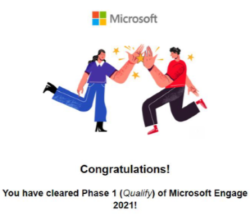

Hey everyone! Today, I will be sharing my journey from Microsoft Engage Mentorship Program to getting a Full
Time Software Engineering offer at Microsoft :)
Microsoft Engage is a student engagement and mentorship program by Microsoft that offers 1:1 mentorship
to shortlisted students while working on a project, learning sessions specially curated for Engage students, and
a sneak peek into Microsoft's culture and values.
Eligibility Criteria:
- It is open for 2nd year engineering students enrolled in a full-time engineering program
- 6 CGPA and above
Selection Process:
- Eligible students can apply on the application portal where they have to submit their resumes.
- Based on resumes students are shortlisted for the next round, so maintain your CGPA from the first
year itself and try to maintain a good resume with projects, achievements, extra-curricular activities,
etc.

After the resume shortlisting round, you’ll receive a test link for an online test that assesses coding skills as
well as computer fundamentals.
In 2021 this online test was an MCQ test for 45 minutes consisting of questions from topics like DSA,
fundamentals of Languages, DBMS, OS, etc.
In 2022 online assessment was an MCQ test of 10 questions with a time duration of 10 minutes.
To clear these online assessments, you need strong fundamental skills to answer quickly and correctly.
Mentorship and Project phase:
After clearing the online assessment, you enter the project phase where you compete with 1000+ candidates
for internships.
The project statements along with requirements and rules are displayed on the website and change every
year. You have to select your project from the multiple problem statements available.
During this phase, you are assigned a mentor (Industry professional working in Microsoft) along with other
candidates under the same mentor. You will be working under the mentor and updating him/her about your
project progress. For interaction with the mentor, you will have to give weekly updates and schedule meetings
accordingly. It is advised that you give your updates and schedule meeting with the mentor regularly without
them asking. This shows that you are continuously working on the project. Your interaction with your mentor
plays a huge role in getting internships, so make sure you have a good repo with them.
Along with these, you will have weekly learning sessions and assignments to be completed whose score is
taken into the final grading criteria.
At the end of three weeks, you will be asked to start with the submissions, for which you will be required to
submit the code along with a video demo and presentation to the mentor.
Interviews for Internship:
Based on your project results along with the mentor feedback, the students get categorized into the following
groups for interviews:
Direct Internship:
The first category of candidates gets the direct 2 months SWE internship in Microsoft.
AA (As Appropriate) Round: The second category of candidates get a mail for the final AA round of interviews
which is an HR round for 45 minutes. Here they assess your communication skills as well as your ethics and
values and if you will be a good fit for the company.
One Tech + AA Round: The tech round is a DSA coding interview for approx. 45-60 minutes, where the
interviewer gives you a coding question and you have to give the best approach for it and code it on the
platform available.
The topics like LinkedList, stacks, queues, arrays, and trees have more weightage in the interviews as they are
more commonly asked. So have a strong base on these topics.
Only the candidates who clear this tech round are eligible for the AA round.
Two Tech + AA Round: This category of candidates get a mail for a tech round, on clearing which they have to
give another tech interview. Only the candidates who clear both tech rounds are eligible for the final AA round.
Getting the internship:
Clearing the whole interview process takes us to the final step which is getting the mail from Microsoft that we
are selected for SWE Internship at Microsoft.
It is a tedious process of two–three months, but it is definitely worth the effort. These two months of hard
work ensure the opportunity to the conversion of the internship to a full-time offer meaning, getting to focus
on personal development along with enjoying the fourth year without the worry of placements.
So, I would say put in your best efforts and grab this opportunity!!
All the best!!
Feel free to reach out in case of queries :)